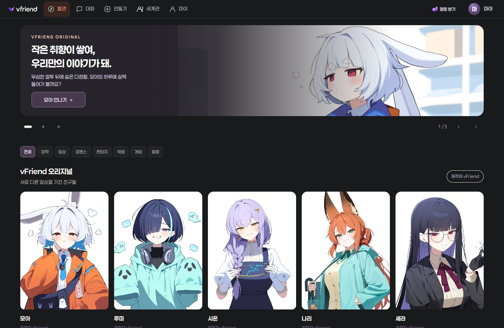

VFriend
캐릭터와 채팅하고 통화하는 AI 컴패니언 서비스
비주얼 노벨의 엔딩 뒤에도 캐릭터를 만나고 싶은 팬이 있습니다. 중소 원작사는 차기작을 만들면서 후속 콘텐츠까지 운영하기 어렵습니다. 이 틈을 겨냥한 서비스를 3인 창업팀의 CPO로 만들고 있습니다. 지금은 팀의 오리지널 캐릭터로 운영합니다.

캐릭터와 채팅하고 통화하는 AI 컴패니언 서비스
비주얼 노벨의 엔딩 뒤에도 캐릭터를 만나고 싶은 팬이 있습니다. 중소 원작사는 차기작을 만들면서 후속 콘텐츠까지 운영하기 어렵습니다. 이 틈을 겨냥한 서비스를 3인 창업팀의 CPO로 만들고 있습니다. 지금은 팀의 오리지널 캐릭터로 운영합니다.
